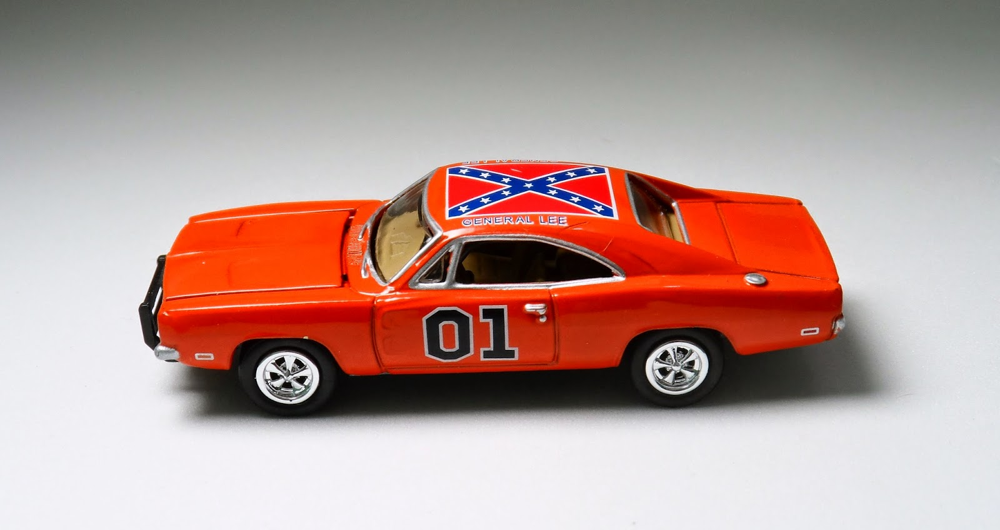
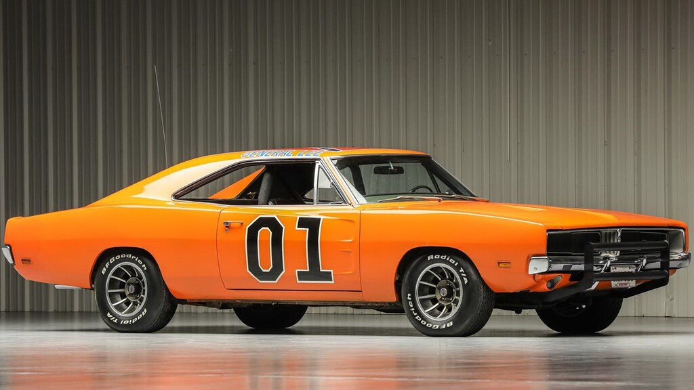
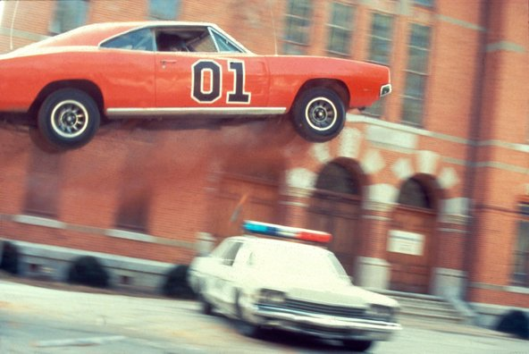

5 cosas que no sabías sobre el General Lee de Los Dukes de Hazzard

1-Para su famoso salto, el de los créditos iniciales, el Dodge Charger "General Lee" de 1969 llevaba varios cientos de kilos de cemento en el maletero. Los saltos anteriores habían salido mal porque el Charger tenía una carga frontal demasiado pesada.

2-El diseño del General Lee era parte integral de su atractivo. Su pintura naranja brillante, conocida como Naranja Hemi, irradiaba energía y emoción, complementando a la perfección las trepidantes secuencias de acción y persecución de la serie. El techo del coche lucía una gran bandera confederada, conocida como la "Cruz del Sur". Esta imagen emblemática generó debates sobre sus implicaciones históricas y simbolismo, lo que dio lugar a discusiones continuas incluso años después del final de la serie.

3-Una de las características más distintivas del General Lee era el número "01" pintado en las puertas y el techo. Este número no fue elegido al azar; era un homenaje al personaje de Burt Reynolds, Bo "Bandit" Darville, de la película "Smokey and the Bandit". El "01" simbolizaba la rebeldía de los chicos Duke y su resistencia a la autoridad.

4-Si bien la apariencia del General Lee llamaba la atención, su rendimiento era igualmente impresionante. Los Chargers utilizados en la serie estaban equipados con potentes motores V8, lo que hacía honor a su reputación como muscle car. Esto le permitía realizar acrobacias audaces, saltos increíbles y persecuciones a toda velocidad que se convirtieron en el sello distintivo de la serie.

5-Uno de los aspectos más memorables de "Dukes of Hazzard" fueron los espectaculares saltos del General Lee. Estos saltos eran a menudo el punto culminante del espectáculo, dejando al público maravillado con las audaces hazañas del coche. Los Chargers surcaban el aire, recorriendo a menudo distancias increíbles y aterrizando con un estruendo estrepitoso.
Los saltos se lograron mediante una planificación meticulosa y cálculos precisos. Se construyeron rampas especiales y los especialistas perfeccionaron sus habilidades para garantizar que los Chargers aterrizaran con seguridad. Estos saltos se convirtieron en una parte tan integral del espectáculo que contribuyeron significativamente a su popularidad.
